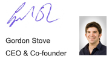

Introduction
Adrok is passionate about helping to make the world a better place by helping to better understand what lies beneath the earth.
We make minerals, water and oil and gas exploration in challenging environments possible
We understand the risks of exploring for oil and gas and our focus is reducing that risk. We like healthy success ratios. So, whether you are Wildcat drilling or exploring known territory, our goal is to add value to your exploration.
Accurate geophysics data during the exploration and appraisal phases of an oilfield project is the key to reducing risk. This is where the Adrok scanner is invaluable. We can either complement seismic activities (our role can be crucial - for example, when liquid is found we can determine whether the resource is water or oil). Or we can be a reliable, accurate, faster, greener and more cost-effective alternative - able to work easily in all terrains, be it jungle vegetation or desert furnace.
Working with Oil companies from Oman to Morocco and Egypt, and from the USA to Australia, our team has worked on an impressive range of hydrocarbon exploration projects.
We know Mining companies have a hard job finding target minerals. Sifting through hundreds of prospects to unearth that one economic mining project can be frustrating and time consuming. The exploration and exploratory borehole costs add up.
Adrok are in the business of making your exploration activities commercially viable.
Our Scanner provides measurements of subsurface natural resources, rock types and rock sequences so you know what lies beneath earlier in the project. Whether it is coal beds just below the surface or deeper deposits of uranium and iron, we can provide accurate data to reduce the need for unnecessary drilling.
Our team have worked on mining projects across the world helping clients searching for coal, lead, zinc, sulphides and gold.
We can reduce the cost of exploratory borehole drilling by 90%.
Our scanner works with a unique combination of physics, mathematics and technical innovation.
Dr Colin Stove, the founder and inspiration behind the Adrok ADR Scanner, had a distinguished career in the field of radar – working with radar sensors from both satellites and the Space Shuttle, as well as working extensively with ground penetrating radar.
This fundamental understanding of wave and light physics gave him the insight and knowledge he needed to successfully reinvent the subsurface scanner using an advanced ‘coherent’ beam (two waves working together), that has worked so effectively, it is fundamentally changing the way the exploration industry works.
Why Atomic Dielectric Resonance?
The first three letters of our name A. D. R. stand for ‘Atomic Dielectric Resonance’. And this phrase is the key to how the scanner works. This is what we create and what we interpret. At an atomic level we measure ‘dielectric resonance’, which is the unique way elements resonate when hit by electromagnetic waves.
How does the scanner do what other scanners can’t?
The Adrok scanner transmits and then receives back, narrow pulsed beams of micro and radio waves. When these waves cross a boundary between element types, an ‘echo’ is reflected back to the scanner.
But the ‘echo’ that is received is different to the one that was sent out. It has a slightly different resonance. Why? Because an element has its own Dielectric Permittivity – or ‘resistance’ to the electromagnetic wave that we hit it with - think of it like pouring water on a variety of household objects - all will absorb and repel the water in a different and unique way depending on what it is made of.
This ‘echo’ is as unique as a fingerprint, and can then be analyzed to reveal detailed information on the characteristics of the element that has been discovered.
Because the micro and radio waves are both absorbed and reflected by a material, we can also obtain accurate measurements of the shape and depth of the element scanned (effectively a map).
Our ability to identify and map resources has been the true breakthrough
After obtaining subsurface data received by the scan, we positively identify the substances using two methods: spectroscopy (this turns our wavelength data into a decipherable spectrum), and Dielectrics - where the readings we obtain are compared with our existing table of substance classification (for example, water has a reading of 80, whereas air has a reading of 1).
In addition to classification, the readings can also analyse fluid content and physical characteristic facts - like well locks and rock petrography.
We can also map the length and depth of the substance to an unrivalled accuracy. Because our electromagnetic waves reflect AND absorb we can potentially measure its three dimensional shape and capacity as well as an exact position. So - no more guesswork!
High quality mapping is probably the most important advantages to the Adrok scanner. The more you know about your resource the more you can effectively extract it. Within the oil and gas and mining sectors, substances can now be quantified before extraction. Our technology can also be used to develop further new reserves as well as monitor existing producing resources.
The Adrok scanner can identify liquids - like hydrocarbons or water, and minerals - like Gold, Copper and Uranium, and the scanner is portable enough to be used in all terrains and transport – be it desert, jungle, mountain – on a boat, plane, helicopter or truck.
Our service to you
We combine efficient technology with customer service.
Our service is hands-on from day one, ensuring at all stages that our client is informed of the survey progress and status. Regular meetings evaluate and appraise the project from all angles. Our partner meetings ensure that all on-site suppliers and partners understand their roles and are acquainted with the project overview.
Our team is always available 24/7 to discuss all matters that may arise. We understand that our clients experience many external pressures (time, budgets, environmental, political to name but a few). And it is our job to help minimise those pressures.
The Adrok scanner is working hard around the world, and is an unrivalled tool in the exploration market - finding the hidden resources so vital to the future of us all. It just works.
Our geophysical survey services are faster, greener and cheaper (typically saving clients up to 90% of the cost of physically drilling a borehole).
And our fees are also transparent. We usually work for a pre-agreed fixed-price during the Exploration and/or Appraisal phase, either as a stand-alone survey service or as a complementary survey to drilling and other geophysical services, like Seismic.
We are also ISO9001 quality accredited (since year 2010) and have an inbuilt dedication to continual improvements in what we do by applying our version of the Japanese Kaizen philosophy and approach.
The reason to choose Adrok can be summed up in four words: deeper, faster, greener and cheaper!
Deeper. The Adrok scanner can, with high vertical resolution, identify and map substances to record depths.
Faster. With no need for exploratory boreholes, the whole process is significantly faster than drilling multiple boreholes.
Greener. Our exploration is virtual’, low energy and non-destructive - we find the optimum position for drilling in the most environmentally friendly way.
Cheaper. In our experience up to 90% of exploration costs can be saved
What would your custom or partnership with Adrok mean to us?
Adrok is a cutting edge technology company headquartered in the United Kingdom with exclusive global patents to Atomic Dielectric Resonance (ADR) imaging technology. This novel technology has been adapted for use in the civil engineering, mining and oil and gas sectors. ADR has been proven to map the sub-surface geology and locate accurately and identify precisely the fluids present. In trials, the ADR technology has identified oil / gas / water / rock types / minerals, penetrated the earth to great depths with high vertical resolution and definition.
Our ambition is simple and bold. To fundamentally change the way our industry explores for its resources (especially water). Because we believe our technology is fundamentally a game changer.
We were told 15 years ago that we would never survive and our technology would never work. We are still here and working with some of the largest Oil and Mining companies in the world. We intend to expand further around the globe, eventually becoming the must-use scanner for all geophysical explorations.
We are employing more and more staff to build momentum with our growing client base and expansion strategy. Our unwavering vision and focus will see us achieve great things in the next few years. Changing the face of subsurface exploration forever. Our technology is market ready and is being used in the field by several exploration and development companies.
We are at an interesting stage in our development.
We hope you enjoy reading this document and we look forward to discussing your own geoscientific surveying needs with you soon.
Keep in touch,
